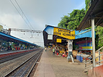

🚉 Live Transit Hub
Complete IST-synced timetable for Konnagar Station (KOG) and Ferry Ghat.
📸 The Visual Tour
Photographic highlights of our town's infrastructure and development.

Baro Mandir Ghat
Twelve identical Shiva temples featuring classic Bengal 'Aatchala' architecture serving as the spiritual anchor.

Konnagar Railway Station
One of the oldest stations connecting Konnagar to the industrial heartbeat of Howrah.

Konnagar Ferry Ghat
A vital riverine transport link across the Hooghly River, continuing the town's waterfront legacy.
Konnagar Post Office
Serving PIN 712235, maintaining the town's communication network since the colonial era.

Konnagar Samabay Bank
A cooperative banking institution supporting the local economy and residents.

Porshi Nagar
Modern Ganga-facing residential complexes rising along G.T. Road.

Modern Real Estate
State-of-the-art high-rise apartments for modern living.

Konnagar Book Fair & Flower Exhibition
Jan 3–11, 2026Organized at Kalitala Prangan by Konnagar Municipality. Annual highlight for book lovers and horticulture enthusiasts.
🏛️ Historic Foundations
The places that shaped our past.
Shakuntala Kali Temple
A deeply revered ancient temple representing Shakti worship traditions of Bengal.
First Bata Factory (1931)
Before Batanagar, Tomáš Baťa established India's first footwear operation right here.
Ghoshal Bari
Received Zamindari rights in 1454, preserving a 571-year-old Durga Puja tradition.
Grand Trunk Road
The historic artery running straight through town, primary corridor for local commerce.
💬 Community Forum
Connect, discuss, and share local updates.
🍜 Gastronomy & Local Flavors
Savoring the sweet and savory traditions of the town.
Legendary Mishti
Authentic Rosogolla, Sandesh, and seasonal Gur delicacies from iconic sweet shops.
Street Food Culture
Hot Telebhaja, Phuchka, and evening snacks near the station that fuel daily commuters.
Riverside Chai
Hot tea in clay Bhar cups by the Ghats watching boats cross at sunset.
📍 Find Us on the Map
Located on the picturesque west bank of the Hooghly River.
🪔 Festivals & Traditions
Centuries-old celebrations that bring the community together.
Ghoshal Bari Durga Puja
A breathtaking 571-year-old tradition that began in the Mughal era.
Shakuntala Kali Puja
The spiritual high point of the year, drawing massive crowds of devotees.
Baro Mandir Shivratri
The 12 Shiva temples come alive with thousands of lamps, chants, and a grand fair.
📚 Study Trails & Educational Roots
Institutions born from the Bengal Renaissance.
Konnagar High School
Founded by Shib Chandra Deb, laid the groundwork for mass literacy and produced legendary alumni.
Konnagar Public Library
One of the oldest free reading rooms in the region, cultivating intellectual awakening.
Nabagram Hiralal Paul College
A prominent degree college contributing to higher education in Hooghly district.
🎵 Arts, Songs & Literature
Where the melody of the river meets the poetry of Bengal.
Tagore's Melodies at the Ghat
Rabindranath Tagore visited multiple times; the tranquil river influenced his poetic sensibilities.
Baganbari's Literary Inspiration
Abanindranath Tagore's childhood in Konnagar inspired his timeless Bengali children's classics.
The Sibram Connection
The legendary Bengali humorist Sibram Chakraborty spent childhood near G.T. Road.
🌟 Expanded Hall of Fame
The historical luminaries who shaped Konnagar's legacy on a global scale.
Shib Chandra Deb
Pioneering Brahmo leader who brought the railway, post office, and schools to Konnagar.
Sri Aurobindo
World-renowned yogi and fierce Indian nationalist with ancestral roots here.
Abanindranath Tagore
The illustrious artist's pivotal childhood years beside the Hooghly River.
Sisir Kumar Mitra
Internationally acclaimed physicist who established radio science in India.
Digambar Mitra
Born 1817, became the first Bengali Sheriff of Kolkata.
Shafiur Rahman
Martyr of the 1952 Bengali Language Movement, born in Konnagar.
Sibram Chakraborty
Beloved Bengali writer who lived near Konnagar High School in his childhood.
Jan Antonín Baťa
Shoe magnate who laid India's first Bata foundations in Konnagar in 1931.
Shashi Bhusan Chatterjee
Famous Indian geographer and proud alumnus of Konnagar High School.
Eric Hayward
Founded the famous Haywards brand right here in Konnagar in 1904.
📢 Advertise With Us
Feature your local business on the Konnagar Directory.